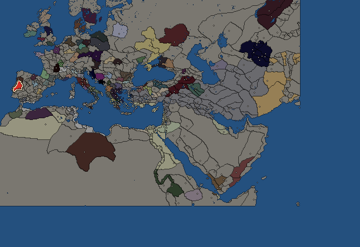
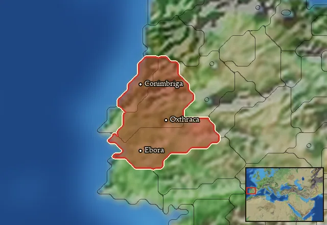

RTR: Imperium Surrectum
RTR: Imperium SurrectumLusitanians


- difficulty Difficult
- Celtiberian culture
- believes
 Celtic
Celtic - 1 settlement
- capital Oxthraca
- 7,000 manpower
- 2 characters
- 15 faction units
- 433 regional units
The campaign brief
"Viriatus regarded independence his greatest wealth, freedom his home." – Poseidonios of Apameia
Since the very creation of time itself, the Gods have ruled. They are like water, flowing from above and beneath to the mountains, then into the rivers and lakes, on towards the endless sea where they return to their dwellings above. Then as now, they preside over the three realms: the world of man, the world of the sky, and the underworld. Not even the priestesses of Endovellicus can tell what the earth looked like before Nabia created the wide, wide sea. Our ancestors sailed over it from the North, crossing the endless water against all odds. Under the protection of mighty Trebaruna, they overcame the sea which the Kenaʿani call the Great Yamm and the Hellenes Okeanos. From its rocky mountains to its fertile plains, from the golden beaches to the thundering rivers, this land is now ours. Between the Durius in the North and the Erbina in the South, the Lusitanian tongue is spoken.
We live dispersed, however, over the whole country. Most of us dwell in the mountains above Moron as shepherds, living a simple and hard life among the eagles and the snakes. These Lusitanians are regularly joined by young men, outcast from the towns, because they cannot inherit the farms of their fathers. From the shepherds, these boys learn to survive, only to form bands and descend on the Turdulians and the Vettonians, and sometimes on the Taporians or Elbocorians, who are Lusitanians themselves. Plundering and fighting is their existence, and when they have collected enough gold, they return to become leaders of their tribes. Other Lusitanians are said farmers, growing grain on the plains around Moron and Oxthraca. Richly supplied by the powerful rivers, warmed by the rays of the eternal sun and favoured by the swift Epona, they construct big farm houses and sell their products to the merchants on the Erbina.
Sailing down to the emporion of Olisipo, the Kenaʿani carry the goods of the interior towards the coast. They transport the abundant food and our most precious metals across the waves to the lustrous island of Gades, the Pillars of Melqart, and the harbour of Qart-Ḥadašt, making a greater fortune than anyone in Ishapan could ever imagine.
In Olisipo, too, Lusitanians dwell. Intermingling with the Kenaʿani, the Turdulians and a few Hellenes, they are enjoying the town-life. Though there are greater cities across the mountains and the deserts, Olisipo is the largest settlement to be found in our land. Yet, our chiefs meet in Oxthraca, which is a grand and proud fortress on the upper Erbina. This is why we come here to debate the future of our people and to arbitrate conflicts. The warfare between our tribes, towns and brigands is a regular phenomenon. But what if a mighty foe threatened our country? What if the Kenaʿani of Qart-Ḥadašt or the Celts, who are spreading across the land like rabbits, decide to take what is ours? Our ancestors wrestled Lusitania from its ancient inhabitants, and if we are not careful others may one day wrestle it from us…
Now let us say: Oilam Trebarune (a piglet to Trebarun)! May the Gods favour us. We need to unite our people and find one king. Maybe he can make Olisipo his and revel in its riches. Our people are good fighters, nimble dancers, proficient with the round Caetra shield. No matter if on foot or horseback, we run back and forth to terrorise our opponents. No one knows the land like us, and no one can catch our warriors. The Kenaʿani are better traders than soldiers, the Turdulians weak and without proper leadership. Allies can be found: the Arevaci to the North-east are strong and proud, the Gallaeci are our kin. Now is the time to rise up! Our fate lies in your hands. Lead us to victory – or our people may triple and fall from these rich shores. From the sea we have come, and to the sea we may have to return…
Starting diplomacy
Lusitanians begins the campaign with no allies, no trade agreements and no wars.
Like every faction, it is also at war with the  Free Peoples, who hold every settlement no faction does.
Free Peoples, who hold every settlement no faction does.
Starting characters
| Name | Role | Age | Name | Role | Age | ||||||
|---|---|---|---|---|---|---|---|---|---|---|---|
| Viriatus | General | 50 | Apano | General | 20 |
Reforms
Open to every faction: Military innovations have arrived!, Second wave of military innovations have arrived!.
Units you can recruit
The same as in the main campaign.
Starting settlements
Lusitanians begins with 1 settlement and 7,000 manpower.
What is already built in each settlement
Oxthraca, in Lusitania: Governor's Villa, Wooden Palisade, Homeland, Region Information Scroll, Roads, Horse Trainer (Rural), Local Barter, Slope Pasturing (Husbandry), Basic Armoury, Cisterns (Sanitation)
Homeland
Lusitanians's homeland is 3 regions. Only there can it install the Homeland government (more on homelands).
